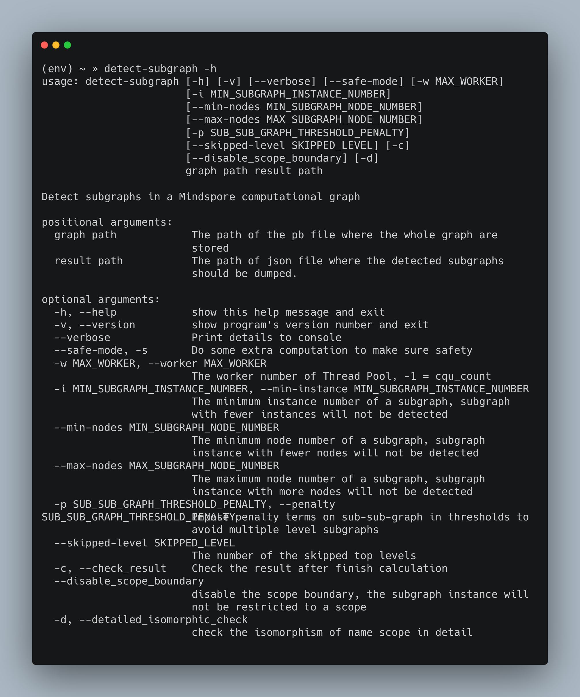

深度学习模型计算图相同子结构的识别和展示¶
参与者
本项目受到 “开源软件供应链点亮计划-暑期2020” 的资助和支持,由peter@mail.loopy.tech设计开发，由gaohan19@huawei.com指导。
MindSpore是华为自研的深度学习框架，其中的计算图模式是一种业界主流的用来进行数据传递与计算的形式。计算图主要包含节点和有向边，节点表示计算和控制操作，边表示数据的流向和控制等关系。计算图的高效合理展示，有助于用户更好的理解模型结构、发现和调试模型训练过程中出现的问题。然而，大型深度学习模型往往有着复杂的计算图结构，包含有成千上万个节点和更多的边。在这些点和边之中，包含有许多结构相同或高度相似的子结构，这些子结构不仅从图的拓扑结构上，甚至从深度学习语义上具有高度的相似性。快速识别大型计算图中上述的相同子结构，能够支持后续用收折、重叠等方式大幅减少页面中同时呈现的节点和边的数目，从而大幅改善计算图的展示效果。
